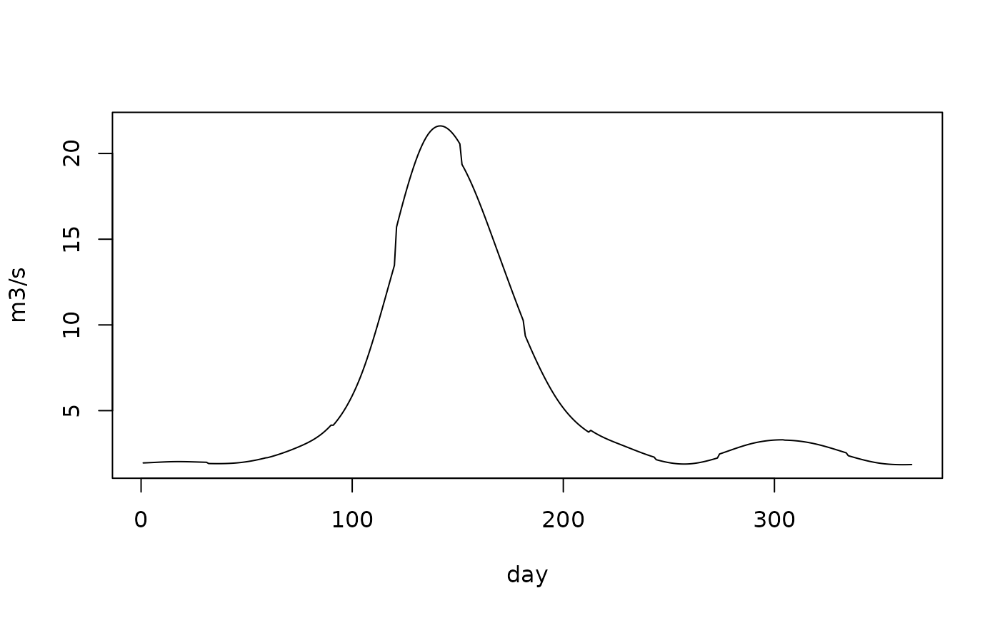

Within-month weights for watersheds, and the daily flows they give
Source:R/wet_shape_predict.R
wet_shape_predict.Rdwet_shape_predict() applies a wet_shape_fit(). wet_shape_flat() and
wet_shape_spline() are the two candidates that need no gauge: flat gives
every day of a month the same weight (what a reader of monthly means
assumes), and spline draws a periodic cubic spline through the 12 monthly
means at mid-month, floors it at 0 and takes each month's days as their
part of the month's spline total. wet_shape_daily() lays monthly means
onto a 365-day common year: q[d] = Q[m(d)] * days[m(d)] * w[d], so the
mean of any calendar month's days is that month's Q, whatever the
weights.
Usage
wet_shape_predict(fit, d, shares = NULL)
wet_shape_flat(n)
wet_shape_spline(q_month)
wet_shape_daily(q_month, w)Arguments
- fit
- d
data.frameof the watersheds, with the fit'sstaticcolumns.Matrix of the watersheds' 12 monthly shares, required by a
"basis"fit made with shares.- n
Number of watersheds.
- q_month
Matrix of monthly means, 12 columns, one row per watershed (a vector is one watershed); any unit proportional to volume per day.
- w
Matrix of within-month weights, 365 columns, one row per row of
q_month.
Details
Every result has one row per watershed and 365 columns, and the weights
of each month sum to 1. wet_shape_predict() and wet_shape_spline()
carry a "flat" attribute, a logical matrix flagging the months that fell
back to flat.
Examples
m <- wet:::wet_doy_month()
q <- c(2, 2, 3, 8, 20, 15, 6, 3, 2, 3, 3, 2) # monthly mean flows
w <- wet_shape_spline(q)
daily <- wet_shape_daily(q, w)
all.equal(unname(tapply(daily[1, ], m, mean)), q) # each month's mean is kept
#> [1] "Attributes: < Modes: list, NULL >"
#> [2] "Attributes: < Lengths: 1, 0 >"
#> [3] "Attributes: < names for target but not for current >"
#> [4] "Attributes: < current is not list-like >"
#> [5] "target is array, current is numeric"
plot(daily[1, ], type = "l", xlab = "day", ylab = "m3/s")
